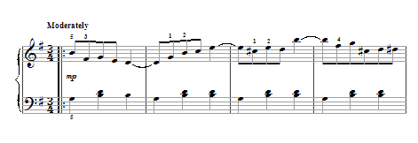
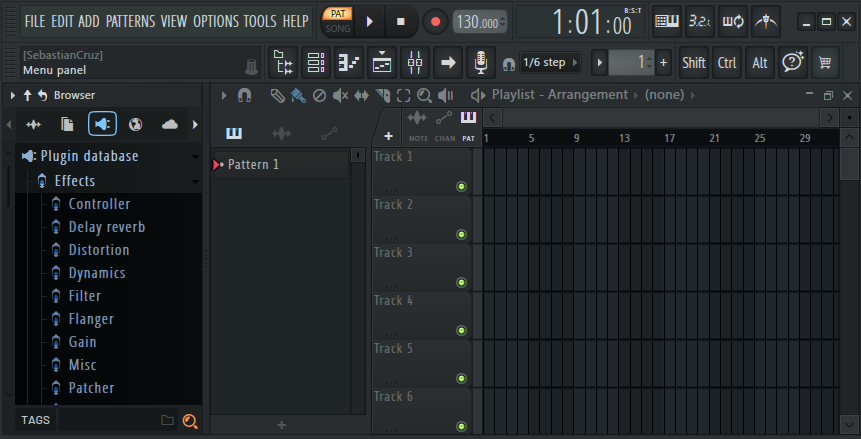

La Estructura de la Armonía

La música no es solo sonido; es una organización matemática del tiempo. Desde el contrapunto de Bach hasta el impresionismo de Debussy, el arte musical ha evolucionado como un lenguaje de comunicación emocional universal.
La transición del piano acústico al digital representa uno de los hitos más importantes en la democratización del arte, permitiendo matices que antes eran exclusivos de las grandes salas de concierto.
La Revolución Digital en el Sonido

Hoy en día, la música se entrelaza con la informática a través de tres pilares fundamentales:
Síntesis de Audio
Creación de timbres mediante osciladores y algoritmos digitales.
Protocolo MIDI
El lenguaje que permite a los instrumentos comunicarse con el software.
Post-Producción
El uso de DAWs (Digital Audio Workstations) para el diseño sonoro.
El Proceso Creativo Moderno
La producción musical actual requiere una mentalidad de analista: entender el flujo de la señal, gestionar latencias y optimizar recursos de hardware para capturar la esencia de una interpretación en vivo.